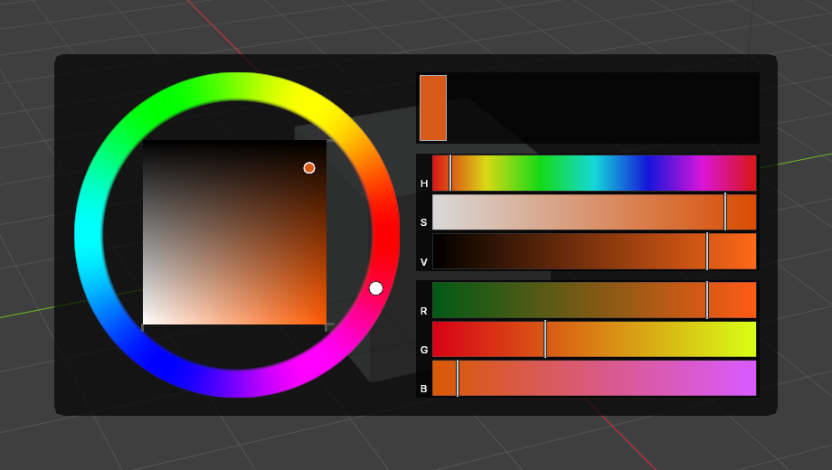
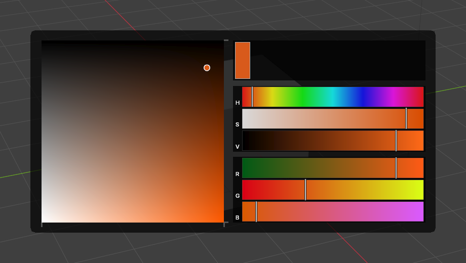
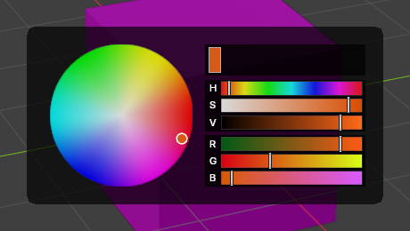
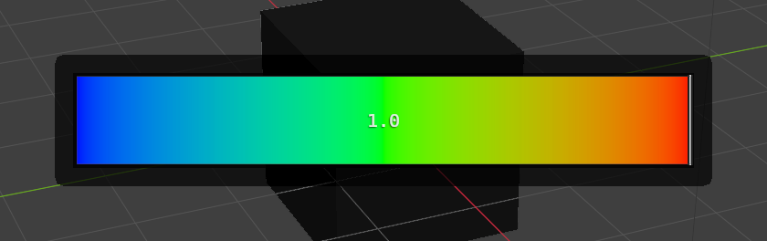
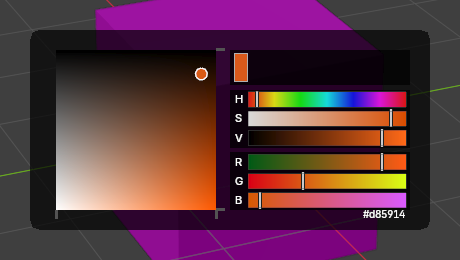
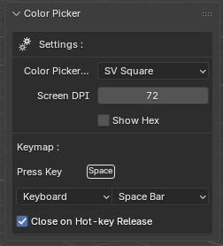

⌨
Hold. Pick. Release.
One hotkey opens it under the cursor. Release and you're back to painting. No mode switching.
Blender 5.0+ · Free & open source
Hold Space in the 3D Viewport and a compact color picker pops up where you're painting. Pick, release, keep painting. Works in Texture, Vertex and Weight Paint.

Interactive
This is a faithful web version of the add-on. Hover the viewport, hold Space (or long-press on touch), pick a color, then release. Or pin it open with the toggle.
Paint strokes use the picked color. Everything runs locally in your browser.
Why it feels fast
One hotkey opens it under the cursor. Release and you're back to painting. No mode switching.
SV Square, Square & Hue Ring, or an HS color wheel. Pick the one that fits your hand.
H/S/V and R/G/B sliders preview the exact gradient you'd get, before you drag.
Every color you pick lands in a strip. Click one to bring it back instantly.
A 0.0 to 1.0 gradient bar for weights, matching Blender's own weight colors.
Show and copy hex codes. Respects Unified Color, exactly like Blender's own fields.
Select a mesh and switch to Texture Paint, Vertex Paint or Weight Paint.
Hover the 3D Viewport. The picker opens centered on your mouse.
Click or drag. The brush color updates immediately.
The picker closes and you keep painting.
Don't unzip it first. Blender installs the zip directly and enables the add-on.
Builds for Blender 2.93, 3.x and 4.x are in the repository's releases folder. They don't receive updates.
The picker opens centered on your mouse. Near the edges of the viewport it shifts so it always stays fully visible. It only opens when the current paint mode has an active brush.
Works like a quick “hold to pick” overlay. Release the hotkey, or press Esc.
Stays open while you try colors. Press the hotkey again, click outside it, or press Esc.
While the picker is open, the brush outline is hidden so it doesn't get in the way.

Every slider shows a live gradient of the colors you'd get by moving it. All controls stay in sync.
Choose a layout with Color Picker Type in the settings.
A square where the horizontal axis is saturation and the vertical axis is value. Change the hue with the H slider. The most familiar layout, and the quickest for shades of one hue.
The saturation/value square inside a hue ring. Drag around the ring for hue and inside the square for tone. Pick any color without touching the sliders.

A color wheel: the angle sets the hue, the distance from the center sets the saturation. Change brightness with the V slider. Closest to a painter's wheel.

In Weight Paint, the picker is a single weight bar: a blue-to-green-to-red gradient from 0.0 to 1.0, matching Blender's weight colors. The current value is shown in the middle. Click or drag along the bar to set the brush weight.
Each time you finish changing a color, it's added to the recent colors strip next to the swatch. Click a recent color to make it the brush color again.
Recent colors are shared between Texture and Vertex Paint, and kept while Blender is open. They're cleared when you restart Blender.

Turn on Show Hex to show the current color as a hexadecimal code, for example #d85914, under the sliders. On Windows and macOS, click the code to copy it to the clipboard.
The picker changes the same color Blender's own color field would:

Sidebar panel: press N in the 3D Viewport and open Paint › Color Picker. Only shows in paint modes, with the hotkey for the current mode.
Add-on preferences: Edit › Preferences › Add-ons › ColorPicker. Every setting, hotkeys for all three paint modes, and a link to support development.
| Setting | Default | What it does |
|---|---|---|
| Color Picker Type | SV Square | The layout. Not used in Weight Paint. |
| Close on Hot-key Release | On | Closes the picker when you release the hotkey. |
| Screen DPI | 72 | Scales the picker's size and text. Range 72–300. |
| Scale Factor | 1.0 | Extra size multiplier (0.5–2) on top of Screen DPI. Preferences only. |
| Show Hex | Off | Shows the color's hex code in the picker. |
Picker size calculator
The default hotkey is Space in all three paint modes. In those modes it opens the picker instead of playing the animation.
Each paint mode has its own hotkey. Change it under Keymap in the sidebar panel (current mode) or in the add-on preferences (all modes). You can also change the input type, such as keyboard or mouse.
Install the new zip the same way as the first time. Blender replaces the old version.
Edit › Preferences › Add-ons, find ColorPicker, open its menu and choose Uninstall.
Yes. It's free and open source under GPL-3.0, the same family of license as Blender. Download it from the latest release, use it in personal and commercial work, study the code and share it.
Buying it is how you support development. It's made by one independent developer, and every Blender release can break add-ons. Purchases pay for updates, fixes and features, and keep it free for students, hobbyists and artists who can't pay for tools right now.
No. It's the same add-on. Buying it doesn't unlock extra features; it supports the project.
Absolutely. Grab it from GitHub. That's exactly why it's free. ♥
Yes. Rebind it per paint mode in the add-on preferences or the sidebar panel.
No. It works in the 3D Viewport in Texture, Vertex and Weight Paint only.
Change Screen DPI, or use Scale Factor (0.5–2) in the add-on preferences. Try the size calculator.
Open an issue on GitHub with your Blender version, OS, paint mode and any error from Blender's system console.
Color Picker is made by one independent developer. Thanks to your support, it stays open, free and public — for you, and for students and artists who can't pay for tools right now.